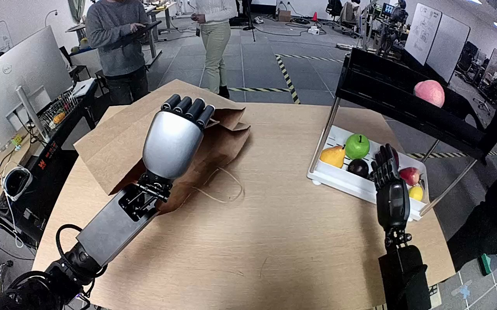

NVIDIA GR1 · 56
Video 56

Visual review action_review.json
{
"prompt_protocol": "humanoid_action_v1",
"prompt_provenance": "visually_authored_from_video_and_initial_frame",
"reviewed_contact_sheets": [
"sheet_001.jpg"
],
"inspected_frame_stride": 2,
"inspected_sampled_frame_count": 60,
"initial_scene": "The pink peach-shaped object rests on the black upper shelf. The left hand is already engaged with the far upper side of the brown paper bag on the table; a pale cord handle runs beneath/along its thumb side, but the exact pinch is obscured by the hand. The right hand is empty near the lower fruit tray.",
"observed_sequence": [
{
"frame_start": 0,
"frame_end": 20,
"action": "Left hand maintains an existing hold at the far upper side of the paper bag; the right hand is empty near the lower tray. The initial engagement predates the sequence.",
"confidence": "high for upper-side hold; exact pinch obscured"
},
{
"frame_start": 21,
"frame_end": 49,
"action": "Right arm raises the open hand to the peach on the shelf and positions its opposing fingers around it. Left hand remains engaged at the bag upper side.",
"confidence": "high"
},
{
"frame_start": 50,
"frame_end": 77,
"action": "Right fingers close around the peach at shelf level and maintain the grasp. The left hand and bag upper side retain their existing relative position; no left-hand regrasp is visible.",
"confidence": "high"
},
{
"frame_start": 78,
"frame_end": 86,
"action": "Right hand lifts the peach free of the shelf; the peach remains enclosed between thumb and opposing articulated fingers. Left maintains its bag-side hold.",
"confidence": "high"
},
{
"frame_start": 87,
"frame_end": 101,
"action": "Right hand transports the peach inward toward the bag. Left hand raises the held upper side; the bag edge and visible cord segment move with it, raising the far bag wall while the opposite handle hangs loose. This coupled motion establishes support rather than mere hand proximity.",
"confidence": "high for support and bag-side raising; exact contacted material partly occluded"
},
{
"frame_start": 102,
"frame_end": 114,
"action": "Right hand lowers the still-enclosed peach through the mouth beneath the left wrist. Left keeps the raised bag side up while the bag walls flex around the entering hand. A pink portion remains visible below the left forearm.",
"confidence": "high for lowering; interior contact hidden"
},
{
"frame_start": 115,
"frame_end": 119,
"action": "Right hand shifts slightly outward at the opening; parts of the finger linkage become visible but the peach-to-finger contact is hidden under the left wrist and bag wall. Left continues holding the bag upper side. No clear empty-hand withdrawal is visible.",
"confidence": "high for hand positions; release unconfirmed"
}
],
"arm_hand_roles": {
"left": "Maintains an already established hold at the far upper side of the bag opening, then raises that side as the peach approaches and keeps it raised during insertion. Coupled bag-edge/cord motion proves support. Exact thumb/palm pinch is occluded; a cord handle is visible beside the thumb, so a direct paper-rim pinch is not established.",
"right": "Closes thumb and opposing articulated fingers around the peach at shelf level, bears it through lift and transport, and lowers it into the bag beneath the left wrist. Final contact and release are hidden; it remains at the opening.",
"coordination": "The right hand bears the peach while the left raises and supports one upper bag side to provide an opening. The bag retains table support. No hand-to-hand transfer, new left-hand regrasp, or interaction with a person is demonstrated."
},
"anatomical_side_evidence": {
"basis": "The initial PNG shows both proximal arms entering from opposite lower near-camera sides and extending forward, consistent with the camera looking from between the arms rather than facing the robot. The image-right hand presents its palmar finger mechanisms and inward-facing thumb; the image-left hand presents its dorsal silver cover and inward thumb at the bag rim. This hand chirality and opposing proximal-arm continuity support anatomical right for the peach manipulator and left for the bag holder, corroborating the original instruction.",
"confidence": "high",
"limitation": "Torso and shoulder attachments are outside the camera field; anatomical labeling is established from arm continuity, hand chirality, and camera-facing orientation rather than a frontal body view."
},
"terminal_state": "The peach has entered the brown bag and is hidden by the left wrist and bag walls. The left hand keeps the upper bag side raised; the right hand remains at the opening after a small outward adjustment. Finger-object separation and independently supported peach placement cannot be confirmed.",
"uncertainties": [
"The left palm/thumb contact is occluded. A pale cord handle lies beneath or along the thumb side and the bag moves with the hand, but handle-only versus paper-edge engagement cannot be resolved; the prompt describes holding and raising the upper bag side without specifying a direct rim pinch.",
"The right hand enters beneath the left wrist and bag wall. Final finger-object separation, peach contact with the bag interior, and independently supported placement remain hidden despite consecutive final-frame inspection.",
"The object is identifiable as the annotated pink peach-shaped target; whether it is real fruit or a prop is not visually established."
],
"annotation_discrepancies": [],
"annotation_assessment": "The annotated right-hand peach transfer from black shelf into brown paper bag matches the visible action. The annotation does not state a release; this review does not add one.",
"evidence_frame_indices": [
0,
34,
42,
44,
48,
50,
52,
70,
78,
80,
82,
84,
86,
92,
94,
96,
98,
100,
102,
104,
106,
108,
110,
112,
114,
115,
116,
117,
118,
119
],
"selected_execution_status": "uncertain",
"selected_execution_status_reason": "Lift, transport, and insertion are demonstrated; successful release and independent support inside the bag are not visible.",
"inspection_coverage": "First review: all 60 even-indexed samples plus source PNG and 9 native details. Second review: all 60 even-indexed samples viewed again via sheet_001.jpg, source initial PNG re-inspected, and 25 nonzero native frames viewed including closely spaced grasp/lift/carry details, every second frame 92–114, and every final frame 114–119. Frame zero represented by native source initial PNG. Full 120-frame original retained.",
"video_id": "56",
"dataset": "NVIDIA_GR1_100",
"dedicated_review_agent": "review_gr1_56",
"review_source_video": "NVIDIA_GR1_100/56/original/original.mp4",
"source_frame_count": 120,
"source_fps": 20.0,
"native_detail_frames": [
0,
34,
42,
44,
48,
50,
52,
70,
78,
80,
82,
84,
86,
92,
94,
96,
98,
100,
102,
104,
106,
108,
110,
112,
114,
115,
116,
117,
118,
119
],
"world_model_prompt": "The robot's left hand holds one side of the brown paper bag's opening while its right hand grasps the pink peach on the black shelf and lifts it free. As the right hand carries the peach toward the bag, the left hand raises the held side to keep the mouth open. The right hand lowers the peach inside and stays at the opening while the left hand maintains its hold. Keep the camera fixed; preserve robot geometry, physically valid joint motion, and normal gripper opening and closing.",
"original_task_instruction": "Use the right hand to pick up pink peach from black shelf to inside brown paper bag.",
"selected_segment": {
"start_frame": 0,
"end_frame_exclusive": 120,
"reason": "Complete original single-task reference; no cropping or trimming requested."
},
"source_video_sha256": "a29a8dac464fb3e5798b2e170a04bc8169dcb485e6497fe07883414fe2c08626",
"review_completed_at": "2026-10-13T19:08:46.888360+00:00",
"bimanual_second_review": {
"completed_at": "2026-10-13T19:08:46.740608+00:00",
"reviewer": "review_gr1_56",
"reason": "Meticulous native-resolution contact tracing under updated AGENTS.md rule.",
"reviewed_contact_sheets": [
"sheet_001.jpg"
],
"initial_png_reinspected": true,
"native_frames_viewed_this_pass": [
0,
42,
44,
48,
50,
78,
80,
82,
84,
92,
94,
96,
98,
100,
102,
104,
106,
108,
110,
112,
114,
115,
116,
117,
118,
119
],
"frame_zero_note": "Native detail frame 0 is pixel-equivalent to the source initial PNG inspected in this pass.",
"contact_chronology": [
{
"frames": [
0,
49
],
"left_contact": "Existing far-upper-side bag hold, palm/thumb contact partly hidden; pale cord beside thumb. No engagement or release occurs visibly.",
"right_contact": "Initially empty; approaches peach with open fingers.",
"load": "Bag remains on table; left constrains upper side."
},
{
"frames": [
50,
77
],
"left_contact": "Maintains the same upper-side relationship without visible regrasp.",
"right_contact": "Fingers close on peach at shelf level.",
"load": "Peach remains at shelf level while grasp settles."
},
{
"frames": [
78,
86
],
"left_contact": "Upper bag hold unchanged.",
"right_contact": "Peach is enclosed by thumb and fingers and lifted above shelf lip.",
"load": "Right hand now bears peach; shelf separation observed at 80–84."
},
{
"frames": [
87,
101
],
"left_contact": "Hand, upper bag edge, and nearby cord move together upward. Opposite cord handle stays loose; exact grip material remains partly occluded.",
"right_contact": "Continuous peach grasp through inward carry.",
"load": "Left supports raised bag side; right supports peach."
},
{
"frames": [
102,
114
],
"left_contact": "Raised side remains coupled to left hand; no clear regrasp.",
"right_contact": "Peach descends through opening under left wrist; initially visible inside thumb/finger enclosure, later partly hidden.",
"load": "Right supports peach during entry; interior contact is not visible."
},
{
"frames": [
115,
119
],
"left_contact": "Maintains upper-side hold as bag walls settle.",
"right_contact": "Small outward hand adjustment, with some finger linkage visible, but contact zone remains occluded.",
"load": "Cannot determine whether bag has taken peach weight or right hand still bears it."
}
],
"object_relative_comparison": "Compared the far bag edge, visible pale cord segment, near hanging handle, and table-supported lower bag edge across frames 92–104. The far side rises with the left hand and walls flex; this is compliant bag opening/support, not a separate mechanism or inferred twist. Peach remains between right thumb and fingers across shelf clearance and carry.",
"changes_from_first_review": [
"Replaced asserted direct rim grip with visible upper-side hold because precise cord-versus-paper engagement is obscured.",
"Made left-hand raising of the held side explicit in prompt and contact chronology.",
"Retained release uncertainty after consecutive final frames rather than labeling placement complete."
],
"material_uncertainties": [
"Precise left grip material is occluded.",
"Right-hand release and final peach support are occluded."
],
"source_media_unchanged": true
}
}